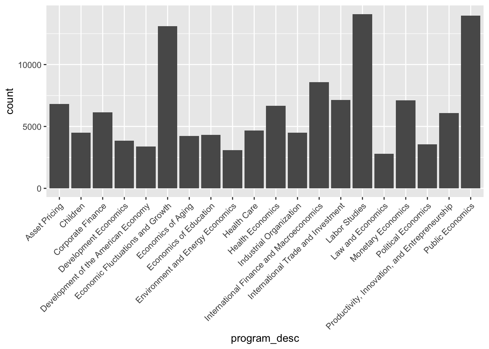

## here() starts at /Users/ameliafoley/Desktop/MADA/AMELIAFOLEY-MADA-portfolio##
## Attaching package: 'scales'## The following object is masked from 'package:purrr':
##
## discard## The following object is masked from 'package:readr':
##
## col_factorFor this assignment, I will work with the R for Data Science Tidy Tuesday Dataset, week 40 (9/28/2021).
loc_authors <- here("data","2021-09-28", "authors.csv")
loc_combo <- here("data","2021-09-28", "combo_df.csv")
loc_paperauthors <- here("data","2021-09-28", "paper_authors.csv")
loc_paperprograms <- here("data","2021-09-28", "paper_programs.csv")
loc_papers <- here("data","2021-09-28", "papers.csv")
loc_programs <- here("data","2021-09-28", "programs.csv")
authors <- read.csv(loc_authors)
combo <- read.csv(loc_combo)
paperauthors <- read.csv(loc_paperauthors)
paperprograms <- read.csv(loc_paperprograms)
paper <- read.csv(loc_papers)
programs <- read.csv(loc_programs)## Rows: 15,437
## Columns: 4
## $ author <chr> "w0001.1", "w0002.1", "w0003.1", "w0004.1", "w0005.1", "w00…
## $ name <chr> "Finis Welch", "Barry R Chiswick", "Swarnjit S Arora", "Lee…
## $ user_nber <chr> "finis_welch", "barry_chiswick", "swarnjit_arora", NA, "jam…
## $ user_repec <chr> NA, "pch425", NA, "pli669", "psm28", NA, NA, NA, "pli259", …## Rows: 130,081
## Columns: 12
## $ paper <chr> "w0001", "w0002", "w0003", "w0004", "w0005", "w0006",…
## $ catalogue_group <chr> "General", "General", "General", "General", "General"…
## $ year <int> 1973, 1973, 1973, 1973, 1973, 1973, 1973, 1973, 1973,…
## $ month <int> 6, 6, 6, 7, 7, 7, 8, 9, 9, 9, 9, 9, 10, 10, 10, 10, 1…
## $ title <chr> "Education, Information, and Efficiency", "Hospital U…
## $ author <chr> "w0001.1", "w0002.1", "w0003.1", "w0004.1", "w0005.1"…
## $ name <chr> "Finis Welch", "Barry R Chiswick", "Swarnjit S Arora"…
## $ user_nber <chr> "finis_welch", "barry_chiswick", "swarnjit_arora", NA…
## $ user_repec <chr> NA, "pch425", NA, "pli669", "psm28", NA, NA, NA, "pli…
## $ program <chr> NA, NA, NA, NA, NA, NA, NA, NA, NA, NA, NA, NA, NA, N…
## $ program_desc <chr> NA, NA, NA, NA, NA, NA, NA, NA, NA, NA, NA, NA, NA, N…
## $ program_category <chr> NA, NA, NA, NA, NA, NA, NA, NA, NA, NA, NA, NA, NA, N…## Rows: 67,090
## Columns: 2
## $ paper <chr> "w0001", "w0002", "w0003", "w0004", "w0005", "w0006", "w0007", …
## $ author <chr> "w0001.1", "w0002.1", "w0003.1", "w0004.1", "w0005.1", "w0006.1…## Rows: 53,996
## Columns: 2
## $ paper <chr> "w0074", "w0087", "w0087", "w0107", "w0116", "w0117", "w0129",…
## $ program <chr> "EFG", "IFM", "ITI", "PE", "PE", "LS", "HE", "IFM", "ITI", "HE…## Rows: 29,434
## Columns: 4
## $ paper <chr> "w0001", "w0002", "w0003", "w0004", "w0005", "w0006", "w0007", "…
## $ year <int> 1973, 1973, 1973, 1973, 1973, 1973, 1973, 1973, 1973, 1973, 1973…
## $ month <int> 6, 6, 6, 7, 7, 7, 8, 9, 9, 9, 9, 10, 10, 10, 10, 11, 11, 11, 12,…
## $ title <chr> "Education, Information, and Efficiency", "Hospital Utilization:…## Rows: 21
## Columns: 3
## $ program <chr> "AG", "AP", "CF", "CH", "DAE", "DEV", "ED", "EEE", "E…
## $ program_desc <chr> "Economics of Aging", "Asset Pricing", "Corporate Fin…
## $ program_category <chr> "Micro", "Finance", "Finance", "Micro", "Micro", "Mic…After looking at these data files, it looks like we loaded more than we needed. “Combo” represents a combination of the other individual data files. We’ll work with that going forward. “Combo” gives us 130,081 observations of 12 variables, so we have a lot to work with.
## paper catalogue_group year month
## 1 w0001 General 1973 6
## 2 w0002 General 1973 6
## 3 w0003 General 1973 6
## 4 w0004 General 1973 7
## 5 w0005 General 1973 7
## 6 w0006 General 1973 7
## title
## 1 Education, Information, and Efficiency
## 2 Hospital Utilization: An Analysis of SMSA Differences in Hospital Admission Rates, Occupancy Rates and Bed Rates
## 3 Error Components Regression Models and Their Applications
## 4 Human Capital Life Cycle of Earnings Models: A Specific Solution and Estimation
## 5 A Life Cycle Family Model
## 6 A Review of Cyclical Indicators for the United States: Preliminary Results
## author name user_nber user_repec program program_desc
## 1 w0001.1 Finis Welch finis_welch <NA> <NA> <NA>
## 2 w0002.1 Barry R Chiswick barry_chiswick pch425 <NA> <NA>
## 3 w0003.1 Swarnjit S Arora swarnjit_arora <NA> <NA> <NA>
## 4 w0004.1 Lee A Lillard <NA> pli669 <NA> <NA>
## 5 w0005.1 James P Smith james_smith psm28 <NA> <NA>
## 6 w0006.1 Victor Zarnowitz victor_zarnowitz <NA> <NA> <NA>
## program_category
## 1 <NA>
## 2 <NA>
## 3 <NA>
## 4 <NA>
## 5 <NA>
## 6 <NA>It looks like the columns “user_nber” and “user_repec” may be left over from combining datasets to get authors names. I don’t think we’ll need these for analysis, so let’s remove them.
Even just looking at the top few rows of the combo object, I can see that there are missing values in the program, program description, and program category sections. Let’s see how much info is missing.
## Mode FALSE TRUE
## logical 129551 530This tells us that there are 530 observations out of 129551 that are missing program data. Since this is a relatively small proportion, let’s just remove the NA values and see where that gets us.
## integer(0)It looks like we have gotten rid of all of the observations with missing info now. Let’s look at the data again.
## paper catalogue_group year month
## 96 w0074 General 1975 3
## 111 w0087 General 1975 5
## 112 w0087 General 1975 5
## 113 w0087 General 1975 5
## 114 w0087 General 1975 5
## 142 w0107 General 1975 10
## title author
## 96 Variation Across Household in the Rate of Inflation w0021.2
## 111 Exports and Foreign Investment in the Pharmaceutical Industry w0008.1
## 112 Exports and Foreign Investment in the Pharmaceutical Industry w0008.1
## 113 Exports and Foreign Investment in the Pharmaceutical Industry w0008.2
## 114 Exports and Foreign Investment in the Pharmaceutical Industry w0008.2
## 142 Social Security and Retirement Decisions w0107.1
## name program program_desc
## 96 Robert T Michael EFG Economic Fluctuations and Growth
## 111 Merle Yahr Weiss IFM International Finance and Macroeconomics
## 112 Merle Yahr Weiss ITI International Trade and Investment
## 113 Robert E Lipsey IFM International Finance and Macroeconomics
## 114 Robert E Lipsey ITI International Trade and Investment
## 142 Michael J Boskin PE Public Economics
## program_category
## 96 Macro/International
## 111 Macro/International
## 112 Macro/International
## 113 Macro/International
## 114 Macro/International
## 142 MicroSince the program column contains the acronym for the corresponding description in the program_desc column, the program_desc column is going to be more informative. I think we can go ahead and remove the program column as well as the paper and author columns which just contains ids.
Another thing I notice is that paper titles are repeated in the dataset since there are multiple authors for some papers. I think this is good since it’s already in tidy-ish format. We can see what “number” author a particular author is based on the final digit in the “author” column. Maybe we can alter this variable to keep just that final digit to make it easier to compare author position.
test <- cleandata
test$author <- sapply(strsplit(as.character(cleandata$author), ".", fixed = TRUE), `[`, 2)
cleandata <- test Okay, I think that last code chunk successfully provided author positions. Now, I see that there are some repeated listings of papers and authors that have been listed under multiple program categories. I’m not sure the best way to approach this, but I think it needs to be addressed because the duplicates could cause issues in analysis. Let’s figure out how to subset this data in a way that makes sense. We could use group_by to subset the data further.
## Rows: 128,565
## Columns: 8
## $ catalogue_group <chr> "General", "General", "General", "General", "General"…
## $ year <int> 1975, 1975, 1975, 1975, 1975, 1975, 1975, 1980, 1976,…
## $ month <int> 3, 5, 5, 5, 5, 10, 11, 4, 3, 3, 3, 3, 3, 4, 4, 4, 10,…
## $ title <chr> "Variation Across Household in the Rate of Inflation"…
## $ author <chr> "2", "1", "1", "2", "2", "1", "1", "1", "1", "1", "1"…
## $ name <chr> "Robert T Michael", "Merle Yahr Weiss", "Merle Yahr W…
## $ program_desc <chr> "Economic Fluctuations and Growth", "International Fi…
## $ program_category <chr> "Macro/International", "Macro/International", "Macro/…## catalogue_group year month
## 96 General 1975 3
## 111 General 1975 5
## 112 General 1975 5
## 113 General 1975 5
## 114 General 1975 5
## 142 General 1975 10
## title author
## 96 Variation Across Household in the Rate of Inflation 2
## 111 Exports and Foreign Investment in the Pharmaceutical Industry 1
## 112 Exports and Foreign Investment in the Pharmaceutical Industry 1
## 113 Exports and Foreign Investment in the Pharmaceutical Industry 2
## 114 Exports and Foreign Investment in the Pharmaceutical Industry 2
## 142 Social Security and Retirement Decisions 1
## name program_desc
## 96 Robert T Michael Economic Fluctuations and Growth
## 111 Merle Yahr Weiss International Finance and Macroeconomics
## 112 Merle Yahr Weiss International Trade and Investment
## 113 Robert E Lipsey International Finance and Macroeconomics
## 114 Robert E Lipsey International Trade and Investment
## 142 Michael J Boskin Public Economics
## program_category
## 96 Macro/International
## 111 Macro/International
## 112 Macro/International
## 113 Macro/International
## 114 Macro/International
## 142 Micro## # A tibble: 128,565 × 8
## # Groups: title [28,937]
## catalogue_group year month title author name program_desc program_category
## <chr> <int> <int> <chr> <chr> <chr> <chr> <chr>
## 1 General 1975 3 Varia… 2 Robe… Economic Fl… Macro/Internati…
## 2 General 1975 5 Expor… 1 Merl… Internation… Macro/Internati…
## 3 General 1975 5 Expor… 1 Merl… Internation… Macro/Internati…
## 4 General 1975 5 Expor… 2 Robe… Internation… Macro/Internati…
## 5 General 1975 5 Expor… 2 Robe… Internation… Macro/Internati…
## 6 General 1975 10 Socia… 1 Mich… Public Econ… Micro
## 7 General 1975 11 Notes… 1 Mich… Public Econ… Micro
## 8 General 1980 4 Job M… 1 Ann … Labor Studi… Micro
## 9 General 1976 3 A Sur… 1 Mich… Health Econ… Micro
## 10 General 1976 3 Expor… 1 Merl… Internation… Macro/Internati…
## # … with 128,555 more rowsI’m not having a ton of success trying to use group_by with this object. Let’s see if we can take advantage of the format the data is in right now and look at publication in different fields (based on program description) over time. Let’s look at how many different types of programs and catalouge types we have.
## chr [1:128565] "General" "General" "General" "General" "General" "General" ...## Length Class Mode
## 128565 character characterNot sure the best way to get a summary when looking at a character variable. Let’s try a plot. I remember a plot from Amanda’s visualization last week that could be useful, since it included lots of categories summarized in a legend, and represented values over time. I’ll try to create something similar.
The comparison of this category is not very interesting. Let’s move on.
This figure is a little more informative. There were a lot more publications in the Micro field than Macro and Finance. However, this result could be wonky based on there being duplicate observations for papers encoded as falling under different program descriptions and categories. Maybe we can look into that further later on.
This plot could provide us with some interesting info, but we need to adjust the labels on the x-axis so that they are readable. Found some code from an article at this link
cleandata %>% ggplot(aes(program_desc)) + geom_bar() + scale_x_discrete(guide = guide_axis(n.dodge=3))That’s a little better, but not great.
cleandata %>% ggplot(aes(program_desc)) + geom_bar() + theme(axis.text.x = element_text(angle = 45, hjust=1))
Looking at the first plot we created, it looks like there was huge peak between 2015 and 2020. Let’s look at what subject areas those papers were mostly in.
data2015on <- cleandata %>% filter(year > 2015)
#create plot
data2015on %>% ggplot(aes(x = year, fill = program_desc )) +
geom_area(stat="bin", bins = 5)This is not the best plot type to look at this. Let’s try something else
cleandata %>% group_by(program_desc) %>% ggplot(aes(x = year, fill = program_desc )) +
geom_density()This plot looks okay! Let’s try with the data subset. A note: it is hard to visualize all of the categories of publications with this type of plot, especially since there are so many categories.
data2015on %>% group_by(program_desc) %>% ggplot(aes(x = year, fill = program_desc )) +
geom_density()The plot is not as informative with this subset.
data2015on %>% group_by(program_desc) %>% ggplot(aes(x = year, fill = program_desc )) +
geom_freqpoly()## `stat_bin()` using `bins = 30`. Pick better value with `binwidth`.This is pretty funky looking - it would be better if I combined the month and year columns into one single date variable. Or, it may be better as a bar graph.
## [1] "yearmon"Looks like we’re good to go
tidydate %>% filter(year>2015) %>% group_by(program_desc) %>% ggplot(aes(x = date, fill = program_desc )) +
geom_area(stat="bin")## `stat_bin()` using `bins = 30`. Pick better value with `binwidth`.tidydate %>% filter(year>2019) %>% group_by(program_desc) %>% ggplot(aes(x = date, fill = program_desc )) +
geom_area(stat="bin") + zoo::scale_x_yearmon(n=6) + theme(axis.text.x = element_text(angle = 45, hjust=1))## `stat_bin()` using `bins = 30`. Pick better value with `binwidth`.I’m not sure why the x-axis labels are a bit odd. I think I probably should have used lubridate or another way of managing dates instead of the zoo package. But, from this plot we can see how working papers increased following March 2020, the onset of the COVID-19 pandemic. It would be good to include more dates prior to Jan 2020 for comparison.
tidydate %>% filter(year>2015) %>% group_by(program_desc) %>% ggplot(aes(x = date, fill = program_desc )) +
geom_area(stat="bin") + zoo::scale_x_yearmon(n=6) + theme(axis.text.x = element_text(angle = 45, hjust=1))## `stat_bin()` using `bins = 30`. Pick better value with `binwidth`.We’re definitely still seeing a huge spike when comparing the working paper numbers from a few years prior! That is my key takeaway from this analysis so far. Let’s refine this plot and wrap up.
tidydate %>% filter(year>2018) %>% group_by(program_desc) %>% ggplot(aes(x = date, fill = program_desc )) +
geom_area(stat="bin", bins = 30) + zoo::scale_x_yearmon(n=6) +
theme_economist()+
theme(
legend.key.size = unit(0.3, 'cm'),
legend.position = "top",
legend.text = element_text(size=5),
legend.title = element_blank()) + xlab("Date") + ylab("No. of Papers") + annotate(geom="text", x=zoo::as.yearmon("Mar 2020"), y=1500, label="March 2020", size=3)+
geom_segment(aes(x=zoo::as.yearmon("Mar 2020"), y=1480, xend = zoo::as.yearmon("Mar 2020"), yend = 700), arrow = arrow(length = unit(0.2,"cm")), size=0.15)+
ggtitle("National Bureau of Economic Research Papers By Program", "Publications Over Time and Throughout a Pandemic")